규칙 1: 긴 참고 파일에는 목차부터
영상은 스킬이 처음 나온 2025년 10월에 배운 방법이 이제 낡았다는 말로 시작해요. 그때 방법은 설명을 잘 쓰고, 200줄 안으로 줄이고, 참고 파일을 따로 빼는 거였어요. 지금은 공식 가이드의 일곱 규칙으로 점검해야 한다는 게 영상의 주장이에요.
출발점은 클로드가 파일을 읽는 방식이에요. 아래 화면은 공식 가이드의 '깊게 중첩된 참조를 피하세요' 항목이에요. 주황색 표시가 붙은 head -100이 파일의 앞 100줄만 보는 명령이에요.
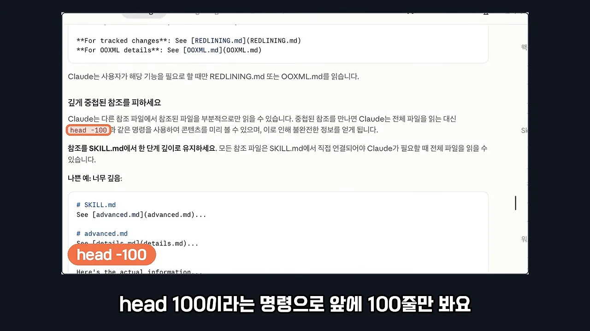
영상은 이걸 그림으로 풀어 줘요. 왼쪽 터미널에서 head -100 reference.md를 돌렸고, 오른쪽 파일은 312줄이에요. 100번째 줄에 선이 그어져 있고, 그 아래 '중요한 규칙은 여기'라고 적힌 곳에 '안 읽힘' 도장이 찍혀 있어요.

중요한 규칙을 100번째 줄 아래에 써 두셨으면 클로드한테는 그 규칙이 없는거나 마찬가지예요.
— 영상 00:00
목차를 달면 달라지는 것
규칙은 간단해요. 참고 파일이 100줄을 넘으면 맨 위에 목차를 달아요. 그러면 클로드가 전체를 읽을지, 필요한 부분으로 바로 갈지 고를 수 있어요. 아래 가이드 예시에서 ## Contents 밑의 다섯 줄이 목차예요. 인증과 설정, 핵심 기능, 고급 기능, 오류 처리, 코드 예시가 차례로 있고, 그 아래로 내용이 이어져요.
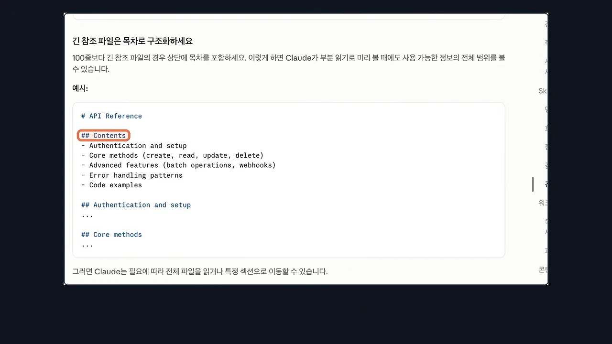
직접 고칠 필요는 없어요. 영상은 Claude Code나 Claude 채팅에 아래처럼 한 줄만 시키라고 해요. 화면의 입력창에 들어 있는 문장이 바로 그 지시예요.
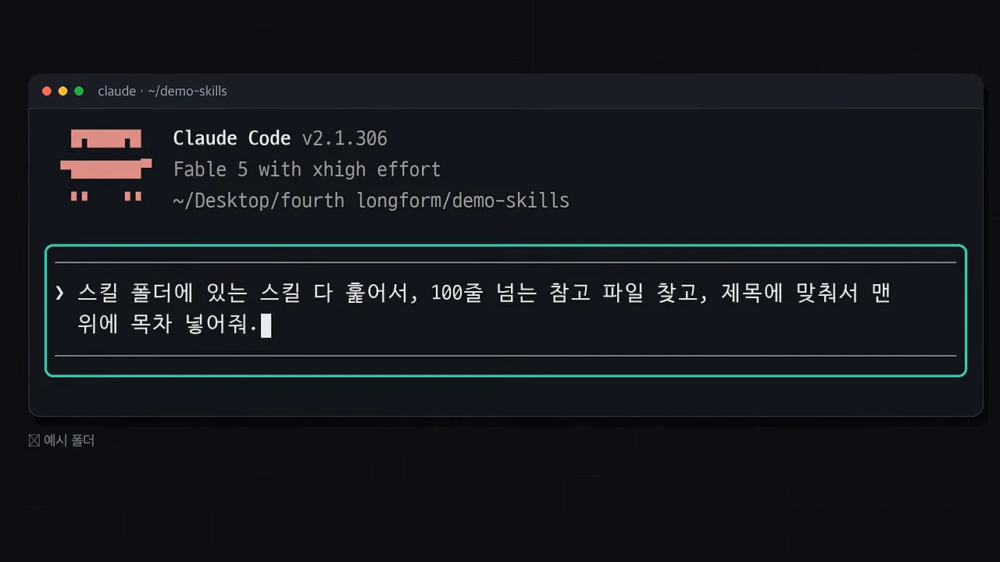
스킬 폴더에 있는 스킬 다 훑어서, 100줄 넘는 참고 파일 찾고, 제목에 맞춰서 맨 위에 목차 넣어줘.규칙 2: 자유도는 일에 맞춰 정해요
발표자는 전에 스킬을 다 똑같이 자세하게 썼다고 해요. 그런데 실제 일은 그렇게 딱 떨어지지 않아요. 화면에 표시된 가이드의 문장이 이 규칙의 핵심이에요. 작업이 얼마나 쉽게 깨지고 얼마나 매번 달라지는지에 맞춰 구체성을 조절하라는 거예요. 이걸 자유도를 맞춘다고 해요.
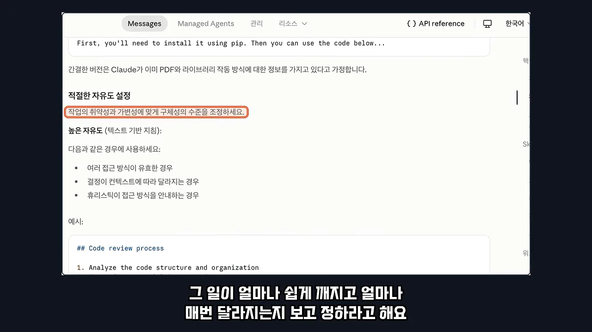
단계는 세 가지이고, 영상은 단계마다 슬라이드를 넘기며 설명해요. 사업하는 사람의 예시까지 더해 주는데, 한곳에 모으면 이렇게 돼요.
높음: 목표만 줘요
예시는 코드 리뷰예요. 아래 화면의 네 줄이 지시의 전부예요. 구조를 보고, 버그를 찾고, 읽기 쉽게 고칠 곳을 짚고, 프로젝트 규칙을 지켰는지 확인하라는 내용이에요. 잘하는 방법이 여러 개이고 코드마다 답이 달라서, 나머지는 클로드에게 맡겨요.
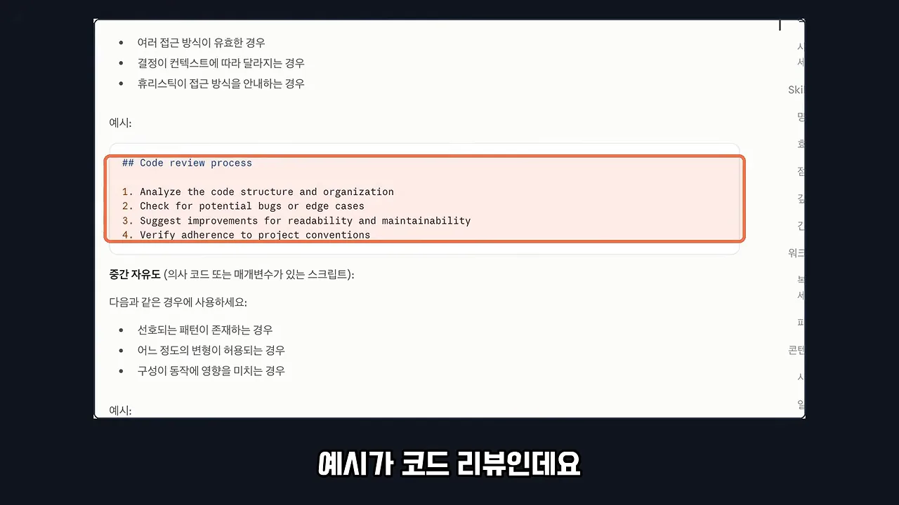
중간: 템플릿에 설정값을 둬요
아래 예시는 보고서 함수의 틀이에요. Use this template and customize as needed라는 문장이 표시돼 있고, 바로 아래 함수에 출력 형식과 차트 포함 여부를 정하는 값이 있어요. 모양은 정해져 있지만 조금 달라져도 괜찮은 일에 맞아요.
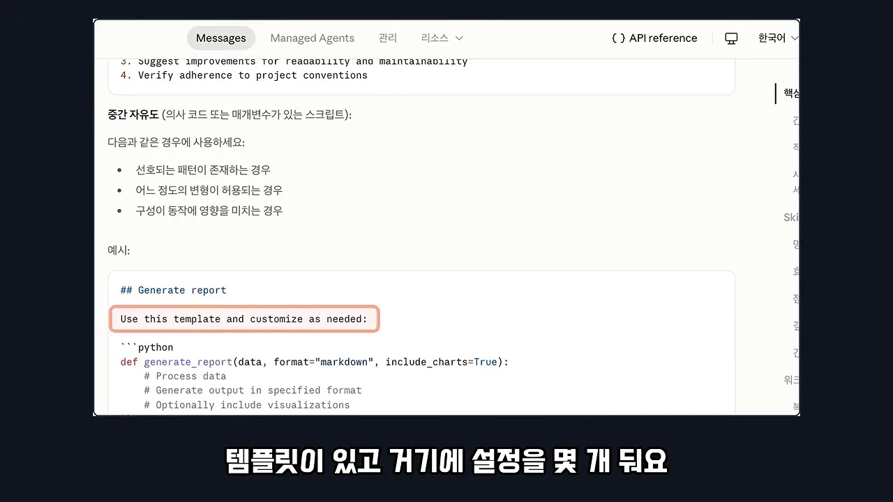
낮음: 정확한 명령 하나만 줘요
결과가 늘 같아야 하고 순서도 지켜야 하는 일이에요. 데이터베이스 이전 예시에서 표시된 문장은 Do not modify the command or add additional flags.예요. 스크립트를 그대로 돌리고, 명령을 바꾸지도 옵션을 붙이지도 말라는 뜻이에요.
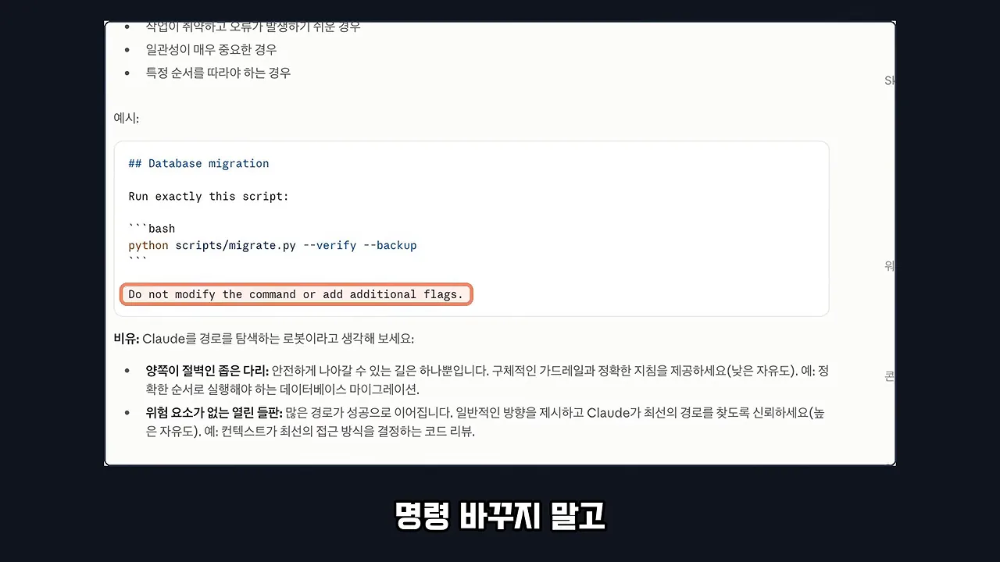
스킬 하나에도 단계마다 달라요
발표자가 이 규칙에서 얻었다는 첫 번째는 자유도가 스킬 단위가 아니라 단계 단위라는 점이에요. 아래 청구서 스킬 예시에서 1단계 '안내 문구 쓰기'에는 높은 자유도 표시가, 2단계 '청구서 발행'에는 자물쇠와 잠금 표시가 붙어 있어요.
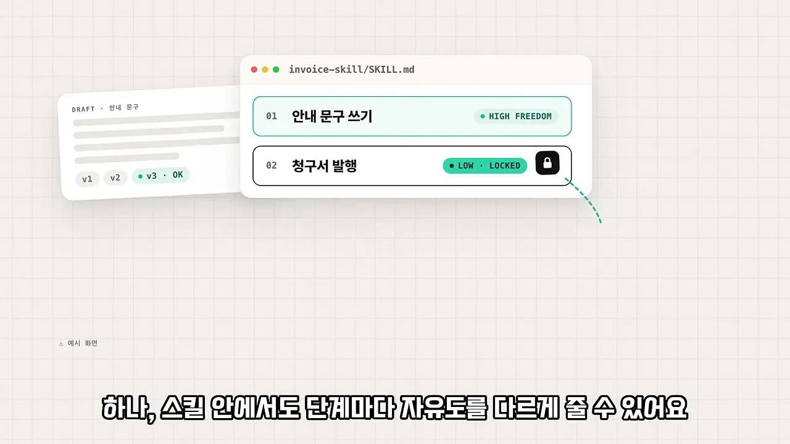
단계마다 물을 질문은 하나예요. '클로드가 이걸 다르게 하면 무슨 일이 생기지?' 아래 그림의 위쪽처럼 별일 없으면 길을 여럿 열어 두고, 아래쪽처럼 큰일이 나면 벗어날 수 없는 다리 위로 올려요.
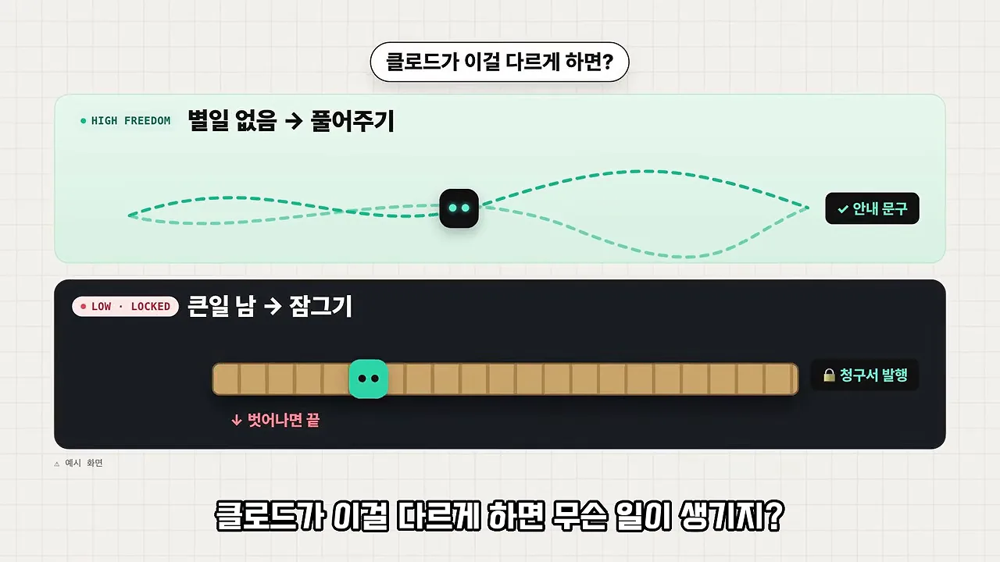
규칙 3: 쓸 모델 전부로 테스트해요
스킬을 만들면 보통 그때 가장 새로운 모델 하나로만 테스트해요. 발표자도 자주 그런다고 해요. 그런데 가이드는 스킬의 효과가 밑에 깔린 모델에 따라 달라진다고 말해요. 아래 화면에서 표시된 곳이 그 문장이고, 바로 밑에 Haiku, Sonnet, Opus별 질문이 하나씩 있어요.

발표자는 필요한 자세함이 반년 사이 크게 바뀌었다고 설명해요. 예전 모델은 단계를 자주 건너뛰어서 번호를 매기고 중요한 곳을 대문자로 강조했어요. 최신 모델은 정반대예요. 아래 Fable 5 가이드의 '권장 변경 사항' 목록에서 표시된 항목을 보면, 예전 모델용 스킬은 너무 깐깐해서 결과를 망칠 수 있다고 적혀 있어요.
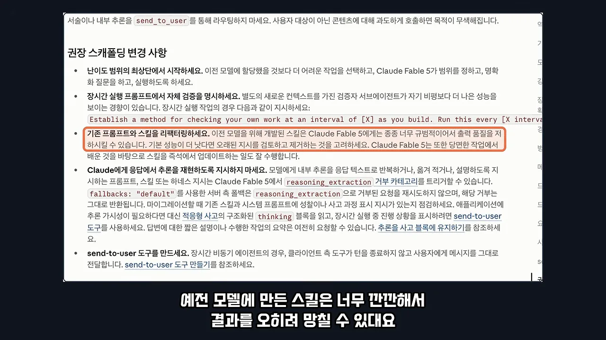
세 모델로 돌려 보고 고쳐요
작은 모델이나 예전 Sonnet은 그만큼 발전하지 않았어요. 그래서 모델 하나로만 쓸 게 아니면 셋 다 되는 선을 찾아야 해요. 영상은 자주 쓰는 스킬 하나를 골라 같은 일을 세 모델로 돌려 보라고 권해요.
| 모델 | 가이드의 질문 | 결과가 이러면 이렇게 고쳐요 |
|---|---|---|
| Haiku | 안내가 충분한가요? | 단계를 빼먹으면 더 분명하게 쓰거나 스크립트로 잠가요 |
| Sonnet | 명확하고 효율적인가요? | 영상에서 따로 말하지 않아요 |
| Opus | 설명이 너무 많지 않나요? | 스킬 없을 때보다 못하면 나아질 때까지 지시를 하나씩 지워요 |
스크립트로 잠그는 방법이 여기서 다시 나와요. 스크립트는 어떤 모델에서 돌려도 똑같이 동작하기 때문이에요.
나눠 줄 때는 어떤 모델용인지 적어요
영상은 스킬을 다른 사람에게 줄 거라면 맨 위 머릿말에 어떤 모델용인지 적으라고 해요. 아래 예시의 4번째 줄이 그 부분이에요. model: claude-sonnet-4-5 뒤에 Haiku와 Opus에서도 테스트했다는 메모가 괄호로 붙어 있어요.
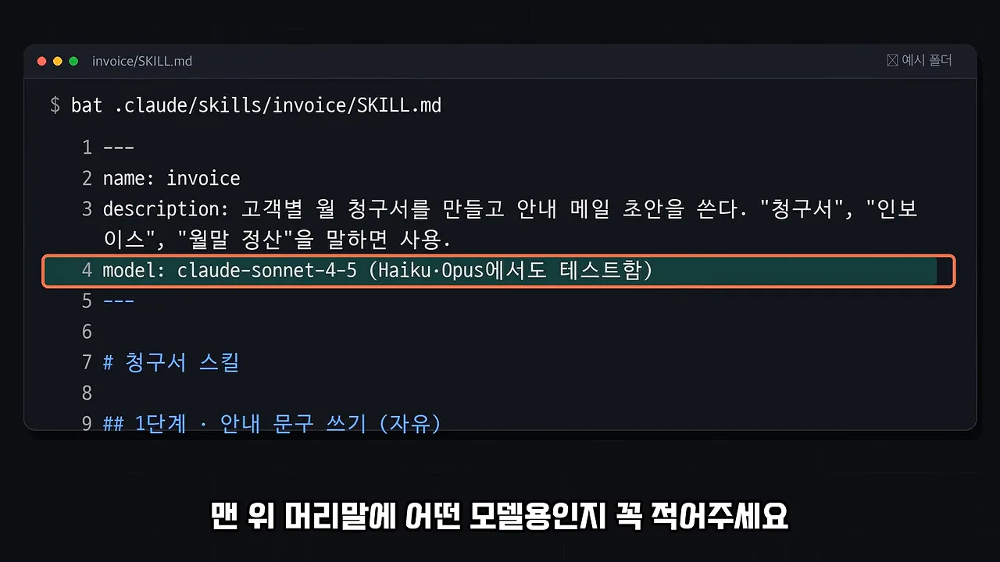
규칙 4: 참조는 한 단계만
여기부터는 글이 아니라 파일 배치 이야기예요. 가이드는 SKILL.md를 전체의 목차처럼 쓰라고 해요. 아래 화면이 그 부분인 '점진적 공개' 항목이에요. 본문은 500줄 미만으로 두고, 이 한도에 가까워지면 내용을 별도 파일로 나누라는 문장이 표시돼 있어요.
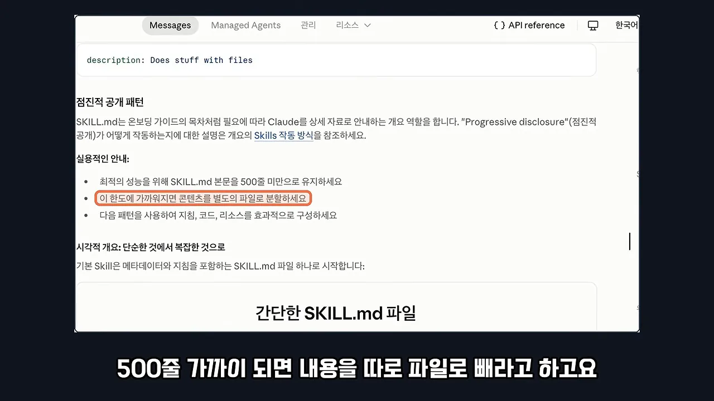
실제 폴더는 이렇게 생겼어요. pdf/ 안에 SKILL.md, 양식 안내인 FORMS.md, API 설명인 reference.md, 사용 예시인 examples.md가 있어요. 표시된 scripts/ 폴더가 규칙 2에서 말한 '잠그는 자리'예요. 클로드는 일하다가 그 단계에서 필요할 때만 파일을 열어요.
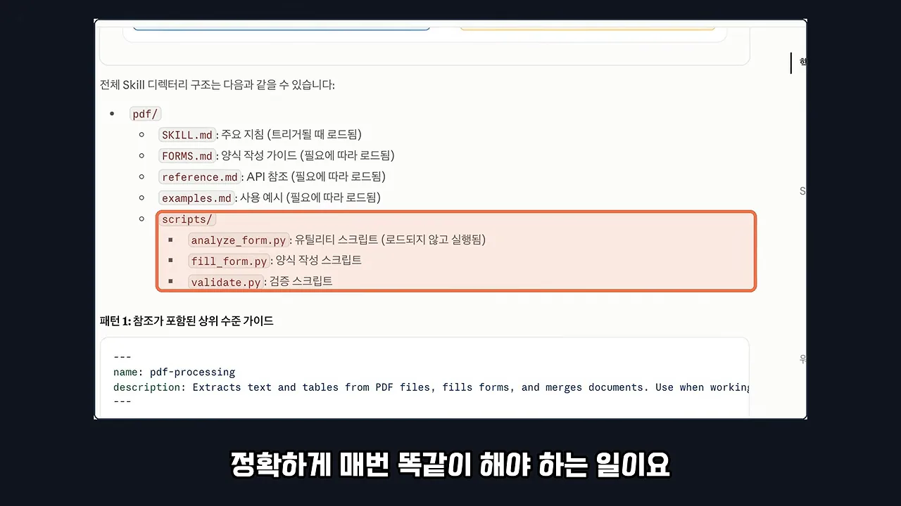
스킬이 여러 분야를 다루면 참고 파일도 분야별로 나눠요. 아래 데이터 스킬 예시는 reference/ 안에 재무, 영업, 제품, 마케팅 파일이 따로 있어요. 매출을 물어볼 때 마케팅 파일은 아예 열리지 않아요. 고객 보고서 스킬이라면 고객마다 파일을 하나씩 두면 돼요.
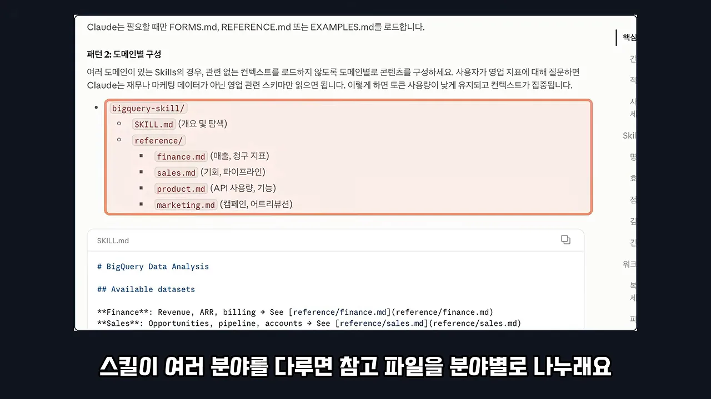
파일이 파일을 가리키면 생기는 일
파일을 나눌 때 조심할 것이 중첩 참조예요. 아래 그림은 깊이를 왼쪽에서 오른쪽으로 보여 줘요. SKILL.md가 advanced.md를, 그 파일이 다시 details.md를 가리켜요. 진짜 정보는 맨 오른쪽에 있는데, 돋보기가 앞부분만 훑고 있어요.

해결은 참고 파일을 전부 SKILL.md에서 바로 연결하는 거예요. 아래 화면의 '좋은 예: 한 단계 깊이'를 보면 advanced.md, reference.md, examples.md가 모두 SKILL.md에 나란히 적혀 있어요.
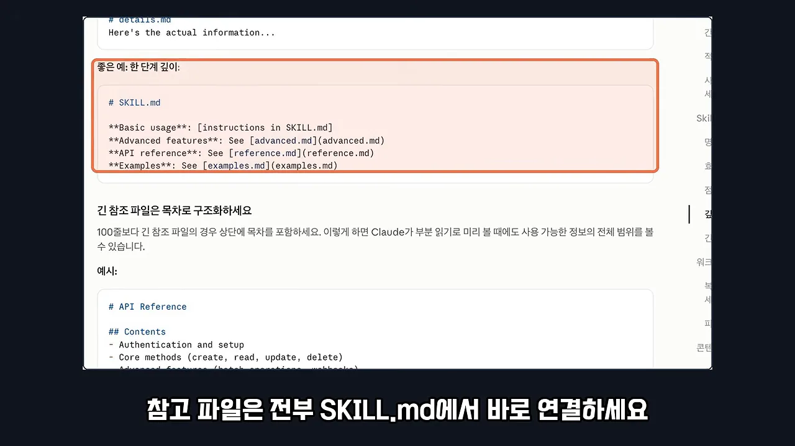
이 일도 클로드에게 시키면 돼요. 다른 파일을 거쳐야 닿는 파일을 찾아서 SKILL.md에 바로 이어 달라고 하면 끝이에요.
규칙 5·6: 체크리스트와 스스로 고치는 루프
규칙 5: 긴 작업에는 체크리스트를 줘요
복잡한 일은 단계로 쪼개고 체크리스트를 줘요. 클로드가 그걸 답변에 복사해 두고 하나씩 체크하면서 가요. 아래 연구 정리 예시에서 표시된 Research Progress 다섯 줄이 체크리스트예요. 자료 읽기, 주제 찾기, 주장 대조, 요약 작성, 인용 확인 순서이고 코드는 하나도 없어요.
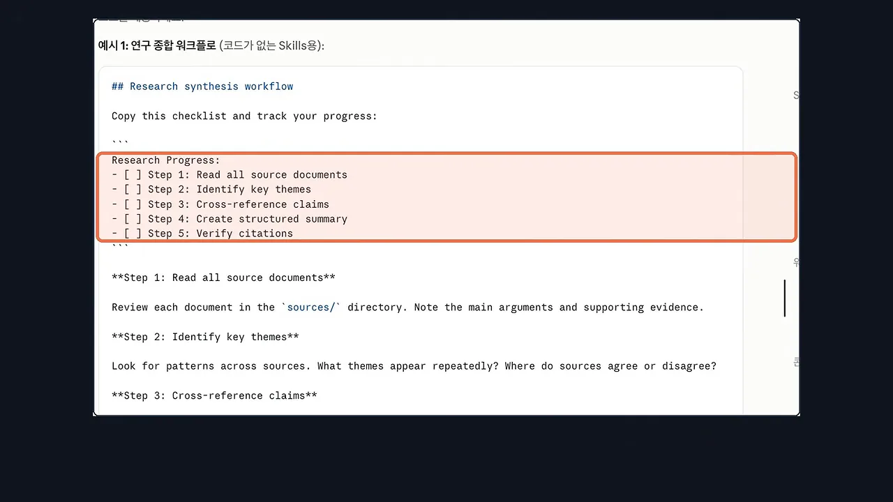
요즘 프롬프트 조언은 일을 통째로 맡기라고 하니 반대처럼 들릴 수 있어요. 발표자는 반대가 아니라고 해요. 단계는 보고서 전에 데이터부터 확인하는 경우처럼 순서가 중요할 때만 쓰고, 상관없으면 체크리스트를 빼요.
발표자가 꼭 보여 주고 싶다는 곳은 5단계 인용 확인이에요. 아래 화면에 표시된 If citations are incomplete, return to Step 3. 한 줄이에요. 인용이 빠졌으면 3단계로 돌아가라는 뜻이고, 이 줄이 있어야 실패한 단계를 체크만 하고 넘어가지 않아요.

규칙 6: 스스로 고치는 루프를 넣어요
방금 그 한 줄이 다음 규칙으로 이어져요. 피드백 루프를 넣는 거예요. 아래 화면의 표시가 그 공식이에요. 검증기 실행, 오류 수정, 반복이에요.
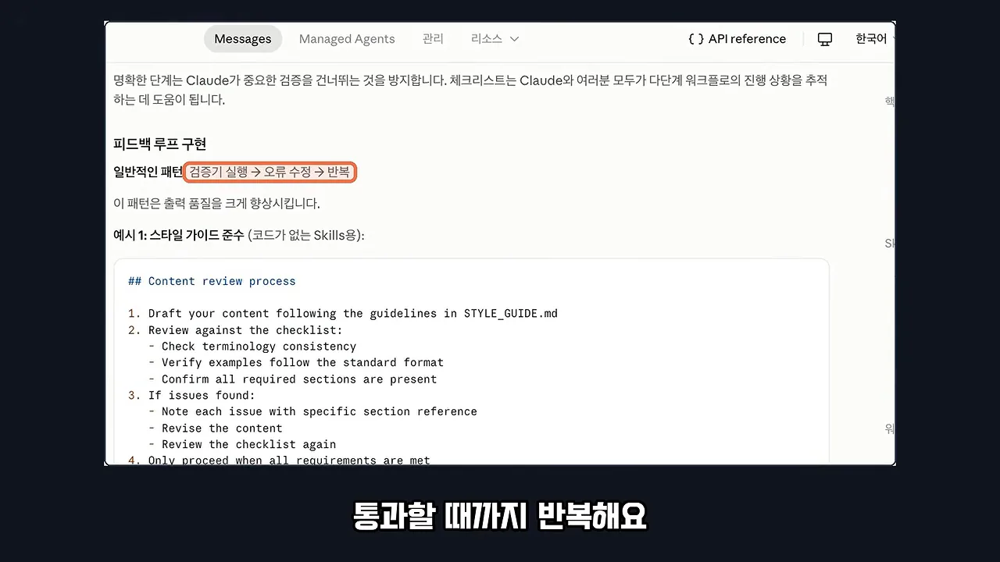
검사가 꼭 코드일 필요는 없어요. 아래 첫 번째 예시의 기준은 그냥 스타일 가이드예요. 다음 다섯 단계로 돌아가요. STYLE_GUIDE.md를 따라 초안을 쓰고, 체크리스트와 비교하고, 문제를 적어 고친 뒤 다시 봐요. 요구 사항을 다 맞춰야 넘어가고, 그제야 저장해요.
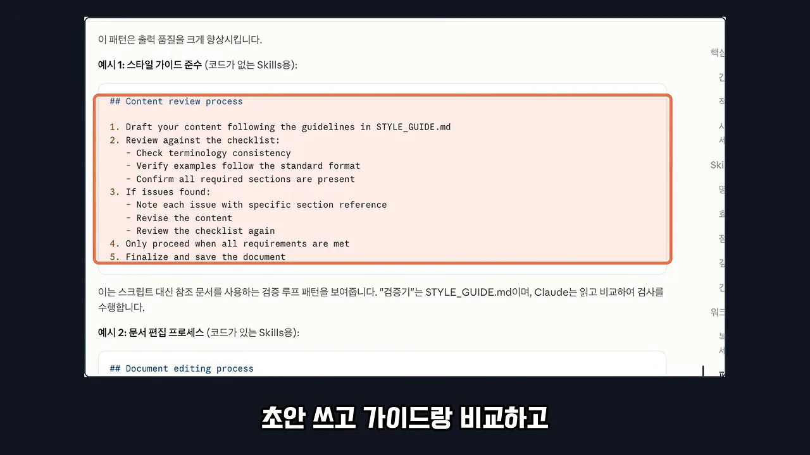
발표자는 여기서 스킬이 스스로 좋아지기 시작한다고 해요. 초안이 말투 문서에 아직 없는 이유로 걸리면, 작업 끝에 클로드에게 새 규칙을 제안하게 해요. 승인하면 그 규칙이 문서에 들어가고, 다음부터는 그 규칙으로도 검사해요. 영상은 말로만 설명한 구조라 그림으로 옮겼어요.
이 방향은 Fable 5 가이드와도 맞아요. 아래 화면 가운데 표시된 문장에 작업하면서 배운 것을 바탕으로 스킬을 고치는 일을 잘한다고 적혀 있어요.
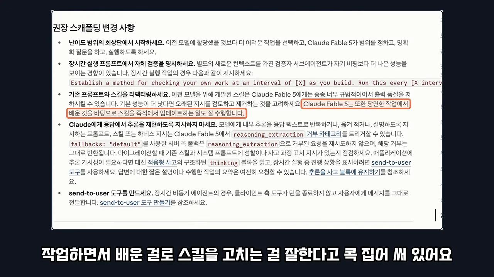
규칙 7: 설치까지 적어 두고, 일곱 가지 점검
마지막 규칙은 어디서든 돌아가게 만드는 거예요. 매일 쓰는 스킬을 팀원이 깔면 첫날 고장 나기 쉽다고 영상은 말해요. 내 노트북에는 반년 전에 깔아 둔 도구가 있지만, 뭘 깔았는지 잊어버렸거든요. 팀원 컴퓨터나 새로 연 클로드 세션에는 그 도구가 없어요.
규칙은 도구가 깔려 있다고 가정하지 말라는 거예요. 아래 화면에 표시된 나쁜 예는 PDF(Portable Document Format) 라이브러리로 처리하라는 한 줄로 끝나요. 바로 아래 좋은 예는 pip install pypdf로 설치할 패키지를 먼저 적고, 그다음 쓰는 코드를 보여 줘요.
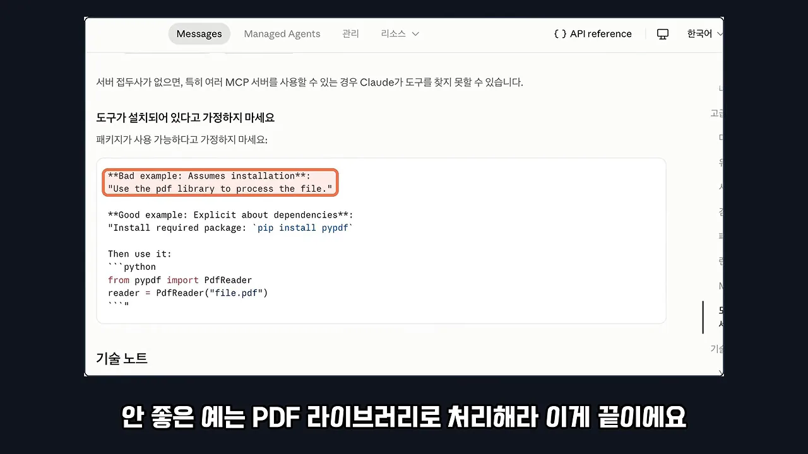
그래서 스크립트마다 옆에 설치 안내를 붙여 두라고 해요. 팀원과 나눠 쓰거나 스킬을 판다면, 이게 첫날부터 되는 스킬과 계속 설치를 도와줘야 하는 스킬의 차이가 돼요.
일곱 가지를 한 번에 점검해요
영상 끝의 정리를 내 스킬에 바로 대 볼 수 있게 표로 옮겼어요.
| 규칙 | 점검할 것 | 고치는 법 |
|---|---|---|
| 1. 목차 | 100줄 넘는 참고 파일에 목차가 있나요? | 제목에 맞춰 맨 위에 달아요 |
| 2. 자유도 | 단계마다 자유도가 일에 맞나요? | 큰일 나는 단계는 스크립트로 잠가요 |
| 3. 모델 테스트 | 쓸 모델 전부로 돌려 봤나요? | 빠뜨리면 분명하게, 더 못하면 지시를 지워요 |
| 4. 한 단계 참조 | 다른 파일을 거쳐야 닿는 파일이 있나요? | SKILL.md에서 바로 연결해요 |
| 5. 체크리스트 | 순서가 중요한 긴 작업에 있나요? | 단계를 적고, 실패하면 돌아갈 곳도 적어요 |
| 6. 피드백 루프 | 결과를 검사하는 기준이 있나요? | 통과할 때까지 고치고, 새 규칙은 승인 후 더해요 |
| 7. 설치 | 새 환경에서도 돌아가나요? | 패키지 이름까지 적어요 |
발표자는 일곱 가지 대부분이 문장을 잘 쓰는 이야기가 아니었다고 정리해요. 모델이 목표만 알아도 지시를 알아서 짜는 일을 점점 잘하기 때문이에요.
글을 얼마나 잘 쓰느냐보다 파일을 어떻게 놓고 무슨 검사를 돌리느냐에서 갈린다고 봐요.
— 영상 10:40